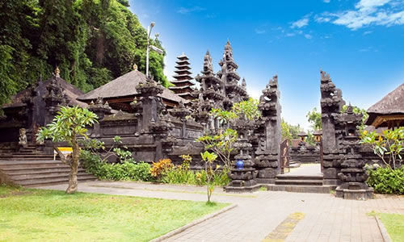

-
旅游那点事最刺激的历险记2019.09.29不知道从何说起，每个人都在讨论“一场说走就走的旅行”。有人说过，人生中至少要有两次冲动，一次为奋不顾身的爱情，一次为说走就走的旅行。我现在正值花样年华，再不疯狂我们就走了。阅读全文
-
 旅游那点事最刺激的历险记2019.09.29阅读全文
旅游那点事最刺激的历险记2019.09.29阅读全文 -
旅游那点事最刺激的历险记2019.09.29不知道从何说起，每个人都在讨论“一场说走就走的旅行”。有人说过，人生中至少要有两次冲动，一次为奋不顾身的爱情，一次为说走就走的旅行。我现在正值花样年华，再不疯狂我们就走了。阅读全文
-
 旅游那点事最刺激的历险记2019.09.29阅读全文
旅游那点事最刺激的历险记2019.09.29阅读全文 -
“ Eyes are raining for her,
heart is holding umbrella for her,
this is love ”
眼睛为她下着雨，
心却为她打着伞，
这就是爱情。
泰戈尔 -
旅游那点事最刺激的历险记2019.09.29阅读全文
-
旅游那点事最刺激的历险记2019.09.29有人说过，人生中至少要有两次冲动，一次为奋不顾身的爱情，一次为说走就走的旅行。我现在正值花样年华，再不疯狂我们就走了。阅读全文
-


 旅游那点事美丽的风景2019.09.29阅读全文
旅游那点事美丽的风景2019.09.29阅读全文 -

-
旅游那点事最浪漫的旅行记2019.09.29不知道从何说起，每个人都在讨论“一场说走就走的旅行”。有人说过，人生中至少要有两次冲动，一次为奋不顾身的爱情，一次为说走就走的旅行。我现在正值花样年华，再不疯狂我们就走了。阅读全文
-
网页设计心得如何“抄”越自己2019.09.29不知道从何说起，每个人都在讨论“一场说走就走的旅行”。有人说过，人生中至少要有两次冲动，一次为奋不顾身的爱情，一次为说走就走的旅行。我现在正值花样年华，再不疯狂我们就走了。阅读全文
-
音乐最刺激的历险记2019.09.29